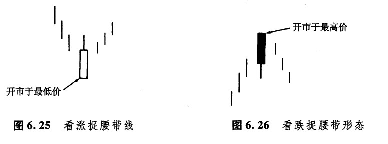
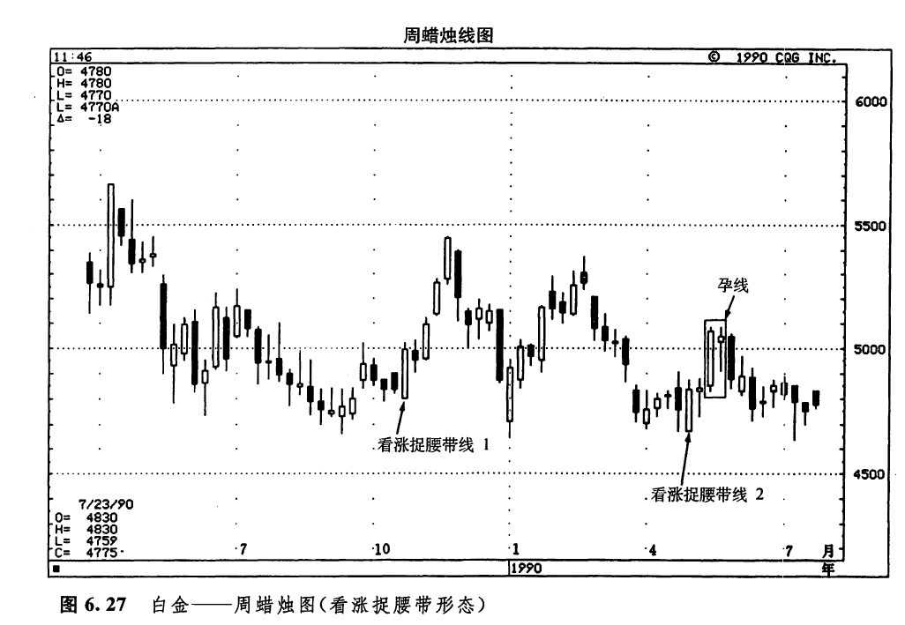
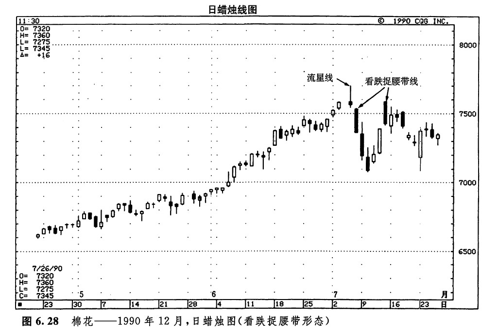
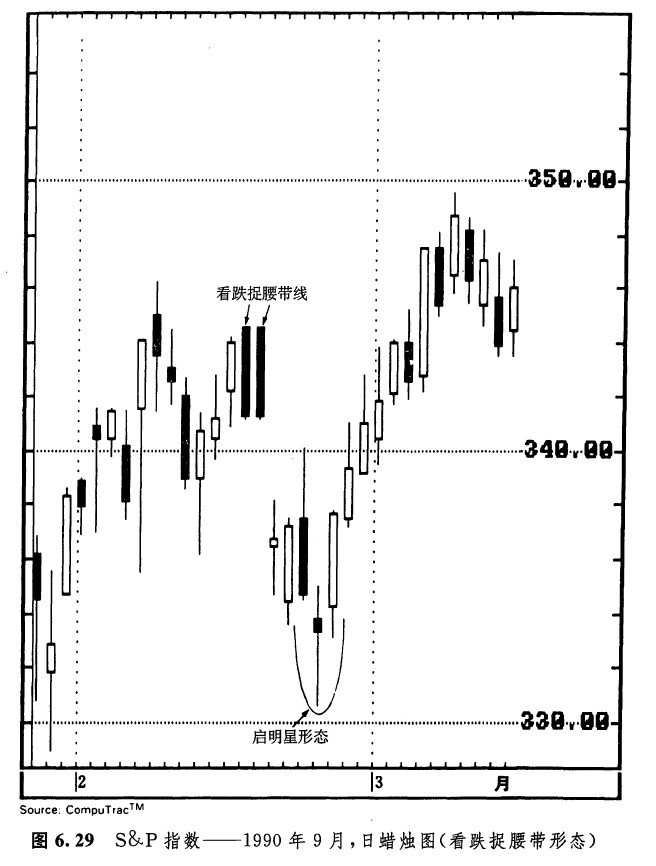

捉腰带形态是由单独一根蜡烛线构成的，既可能具有看涨的意义，也可能具有看跌的意义。看涨捉腰带形态是一根坚挺的白包蜡烛线，其开市价位于当日的最低点（或者，这根蜡烛线只有极短的下影线），然后市场一路上扬。看涨捉腰带线又称为开盘秃（脚）阳线。如果市场处于低价区域，如图6.25所示，出现了一根长长的看涨捉腰带线，则预示着上冲行情的到来。
看跌捉腰带形态（如图6.26所示）是一根长长的黑色蜡烛线，它的开市价位于当日的最高点（或者这根蜡烛线只有极短的上影线），然后市场一路下跌。在市场处于高价区的条件下，看跌捉腰带形态的出现。构成了顶部反转信号。看跌捉腰带线有时也称为开盘秃（头）阴线。

捉腰带蜡烛线的长度愈长，则该形态的技术意义越重大。另外，如果捉腰带线是在市场趋势已经发展了较长时间之后才出现的，那么，它的意义也更加重要。捉腰带形态的日文本名称来自相扑运动的一个术语：羚羊挂角。这个术语的意思是“抓着对手的腰带，将他推出圈外”。如果市场收市于黑色的看跌捉腰带线之上，则意味着上升趋势已经恢复．如果市场收市于白色的看涨捉腰带线之下，则意味着市场的抛售压力重新积聚起来了。
如图6.27所示，看涨捉腰带线1标志着上冲行情的到来。捉腰带线2很有意思。由于这条蜡烛线维持在前一周的低点之上，因此，它不仅与前一周的低点一起构成了一个平头底部形态，同时也验证了这个平头形态的底部信号。随着该形态的完成，市场便开始上涨，直至数周后遇到一个孕线形态，这轮行情才结束。

在图6.28中，流星线的出现，是市场遇上麻烦的第一个征兆。流星线的下一天，是一根看跌捉腰带线，它证实了市场顶部的形成。在下一周里，我们又碰到了一根看跌的捉腰带线，这反映出市场潜在的疲弱性质。

在如图6.29所示的实例中，2月中旬，两个看跌捉腰带钱肩并肩地出现在我们面前。随后，市场发生了一轮短暂而急剧的抛售行情。在这段下跌行情之后，图示的启明星形态构筑了一个市场底部。

下一篇：向上跳空二只乌鸦
上一篇：平头顶部形态和平头底部形态
copyright @ 2018 制作：汉钛电线，Hingtak Wire & Cable LLC